A notch for the top of your Windows screen.
Vale is a free, open-source notch for Windows 11. It shows the clock and a cat when idle, and opens a panel of pages when you hover over it.
The island at the top of this page is live. Hover or click it, tap it on a phone, or press Tab until the island is focused, then Enter.
Or install from PowerShell:
irm https://raw.githubusercontent.com/hartono0297/dynamic-island/main/install.ps1 | iexFor Windows 11 x64. Free, with an MIT licence. The interface is in English and Indonesian.
What is in the panel
Hover the island and the panel opens.In Vale, the panel opens when you hover the island. The island itself changes shape as you use it: lyrics while music plays, a notice when you copy something, a ring while a timer runs.
Music
Vale shows the cover, the controls and the song that is playing. Turn on Lyrics and it fetches synced lines from LRCLIB and shows the current line in the island. Lyrics are off until you turn them on.
The equalizer bars beside the lyric follow the real audio. Roll the mouse wheel over the island to change the volume.
While you read this section, the island above is playing a demo track.
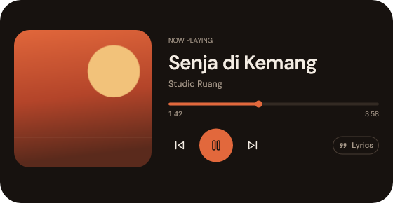
Thirteen pages in one panel
Under the panel, the page dots turn into Dock-style icons that grow as the pointer passes over them. Swipe or use the wheel to change page.
Reorder the pages or hide the ones you do not use in Settings > Panel.
- Calendar
- Pomodoro
- Reminders
- Notes
- Music
- Mixer
- Clipboard
- Notifications
- File shelf
- System
- Devices
- CLI
- Shortcuts
In this section the island above can show a small peek of the panel, when nothing is under it. Hover it to open the whole thing.
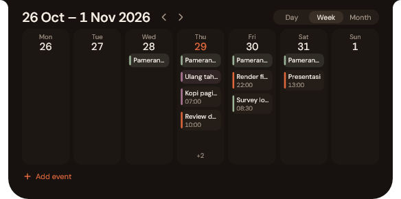
Clipboard
Vale keeps a history of what you copy: the last 50 items, saved on your PC with Windows DPAPI. History is on by default. Copies from password managers are skipped.
Each copy also shows a short preview in the island.
Press a Copy button on this page to see the preview in the island above.
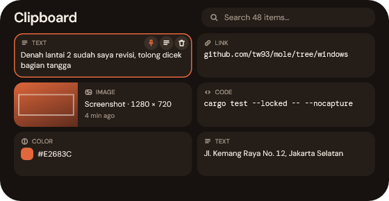
System
CPU, RAM, disks and battery on one page. A cleaner lists what it can remove and the size of each item before you confirm. An optional Mole mode is there if you use Mole.
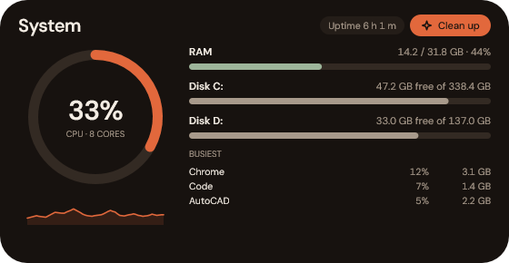
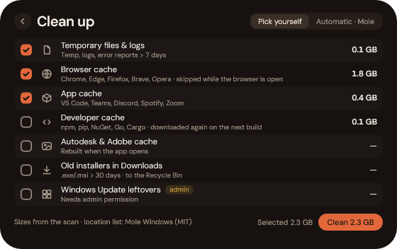
Screenshot
Press PrtSc and Vale opens its own capture, which snaps to windows and boxes. An editor follows. Screenshots are saved to Pictures\Screenshots. The PrtSc key is on by default.
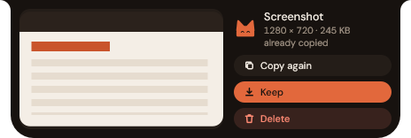
File shelf
Drop files on the island to hold them there. Drag them out again when you need them.
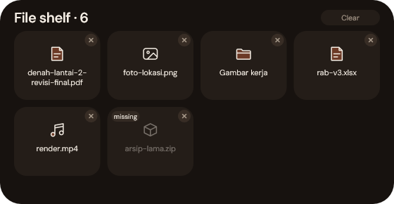
CLI
Run PowerShell or cmd commands right in the panel.
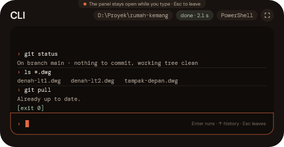
Search
Press Ctrl+Alt+Space for quick search: apps, a calculator, Windows settings, files and the web. Searching the web opens google.com in your browser only when you pick that result.
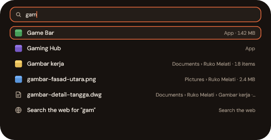
Notifications
Vale keeps a history of Windows toasts, so you can read what you missed. You can mute apps you do not want in it.
Devices
Eject flash drives, external disks and memory cards safely from the panel. The island tells you when a device is plugged in and when it is safe to remove.
Calendar
Connect Google Calendar to see your events by day, week or month, and to add or edit events from the panel. Connecting is optional. The Google Calendar section below says exactly what Vale asks for.
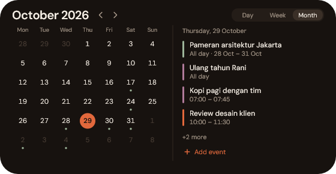
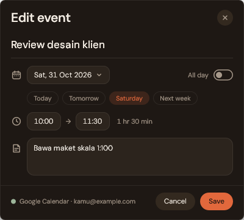
Pomodoro
A focus timer. While it runs, the island shows a ring.
While you read this section, the island above shows a timer ring.
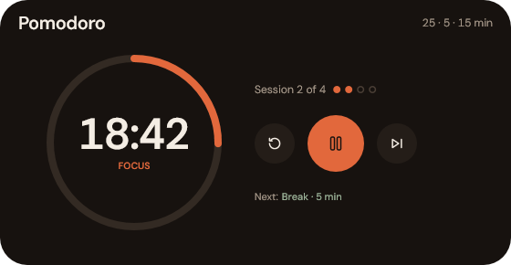
Reminders
Set reminders, and Vale shows a notice in the island when one is due.
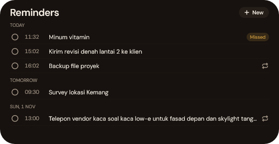
Notes
Keep short notes in the panel.
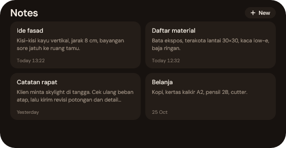
A cat that tells you things
The cat sits in the island when it is idle. Its face and ears change for notices, such as Claude Code finishing or waiting for you, a low battery and a reminder that is due.

Try the catThe cat
Move the pointer and the cat turns its head toward it, the way it does in the island. Pick a coat and an accessory. In Vale, the matching settings are Follow the pointer, Shrink to eyes and Greeting.In Vale the cat follows your pointer. It comes in four coats and six accessories, and it greets you by the time of day. The matching settings are Follow the pointer, Shrink to eyes and Greeting.
Google Calendar
Connecting Google Calendar is optional. If you do, this is what happens.
You sign in in your browser, on Google's own page, using OAuth with PKCE. While you sign in, Vale listens on 127.0.0.1 on your PC for Google's reply, and only during the login. Release builds use Vale's own OAuth client. If you enter your own Client ID in Settings > Integrations, yours is used instead.
Vale lists your calendars and events, creates new events in your primary calendar, and edits existing ones. It never deletes events. Read-only, recurring and multi-day events cannot be edited. While connected, it fetches your events again every 10 minutes.
Data goes only between your PC and Google. Vale has no server in between.
The two scopes
https://www.googleapis.com/auth/calendar.calendarlist.readonly- Reads the list of your calendars, so Vale can show them and their colours.
https://www.googleapis.com/auth/calendar.events- Reads your events, creates events in your primary calendar and edits existing ones. It never deletes them.
Disconnecting
Disconnect in Settings > Integrations. That deletes the saved token and nothing else, so events Vale already cached stay on your PC until you delete them. To revoke Vale's access on Google's side, go to myaccount.google.com/permissions.
Privacy in short
Vale has no server of its own, no account, no telemetry or analytics, and no update checker.
Everything that can leave your PC
- Lyrics from LRCLIB. Off by default. When you turn it on, Vale sends the song title, the artist and the duration, never the album.
- Google Calendar. Only after you connect it.
- Web search. Vale opens google.com/search in your default browser only when you pick that result.
- Links. They open in your browser when you click them.
- The installer. It downloads Vale from GitHub.
Album covers are not downloaded. They come from Windows' media session.
Install
Paste this line in PowerShell. It needs no admin rights.
The installer finds the latest release through the GitHub API, downloads vale.exe and vale.exe.sha256, and checks the SHA-256. It installs to %LOCALAPPDATA%\Programs\Vale, adds a Start Menu shortcut, fetches uninstall.ps1 and starts Vale.
To update, run the same line again. Prefer a file? Download vale.exe.
Install or update
irm https://raw.githubusercontent.com/hartono0297/dynamic-island/main/install.ps1 | iexUninstall
irm https://raw.githubusercontent.com/hartono0297/dynamic-island/main/uninstall.ps1 | iexUninstall and delete Vale's data
This variant also deletes the data Vale keeps on your PC.
$env:DI_PURGE = '1'; irm https://raw.githubusercontent.com/hartono0297/dynamic-island/main/uninstall.ps1 | iex